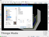
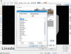
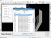
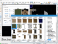

Проекты / 3DGE Builder: Обновление конфигурации
3DGE Builder - форк редактора Doom Builder для порта 3DGE от Coraline Ash.
Я провёл масштабную ревизию конфигурационных файлов, значительно
обновив и расширив их до актуального состояния.
Что обновлено
КРИТИЧЕСКИЕ ИСПРАВЛЕНИЯ (\GZBuilder.default.cfg)
- Добавлен файл GZBuilder.default.cfg, отсутствие которого могло приводить к невозможности запуска редактора, если Doom Builder никогда не устанавливался ранее.
РЕДАКТИРОВАНИЕ (\Configurations\Edge.cfg)
- "mixtexturesflats" установлен как "true", что даст возможность использовать текстуры стен на поверхностях и наоборот. Игровой движок это позволяет.
ПРЕДМЕТЫ (\Configurations\Includes\Edge_things.cfg)
- Добавлена вся отсутствующая графика для всех предметов!
- Добавлены отсутствующие радиусы и высоты.
- Количество стартов игроков увеличено до 16. Каждый спрайт "старта" имеет номер игрока и уникальный цвет спрайта, согласно things.ddf.
- Добавлены Green Keycard / Green Skullkey от порта EDGE (расположены в "EDGE Keys".
- Добавлена Purple, Red, и Yellow броня (расположены в "EDGE Armors").
- Добавлены маркеры светящихся полов: кислота, лава и вода (расположены в "EDGE Glowing Floors").
- Добавлен EDGE Teleport spawner, помещён в "Teleports".
- Jetpack и Nightvision Specs перемещены в "EDGE Powerups".
- Все специфические монстры EDGE (Dog, MKII and Stealth) перемещены в раздел "EDGE Monsters".
СЕКТОРЫ (\Configurations\Includes\Edge_sectors.cfg)
- Устаревшие эффекты секторов 17-80 удалены, они использовались в версиях EDGE 1.28 и более ранних.
- Эффект сектора 29 добавлен как "Hub Entry", согласно SECTORS.DDF.
- Эффекты секторов 4418-4470 добавлены, в соответствии с SECTORS.DDF.
- В названиях эффектов "EDGE" заменён на "Edge", что бы предотвратить слишком обильное использование заглавных букв.
ЛИНИИ (\Configurations\Includes\Edge_linedefs.cfg)
- Файл полностью реорганизован. Все специфические линии EDGE разделены по категориям (например, лестницы теперь находятся в "Edge Ladders" и т.п.).
- Добавлены эффекты линий 490-825, согласно LINES.DDF.
- В названиях эффектов "EDGE" заменён на "Edge", что бы предотвратить слишком обильное использование заглавных букв.
Скачать
Все изменения уже включены в релизную версию 3DGE Builder 0.2.
Актуальную версию редактора можно скачать на официальном сайте.
Скриншоты
Все скриншоты кликабельны:
   
|
{kind=link}
{kind=link}
{kind=link}
{kind=link}